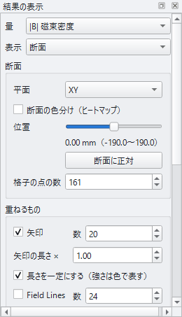
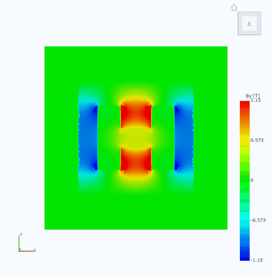
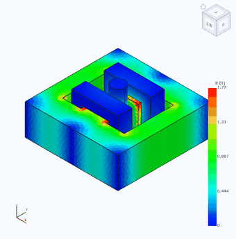
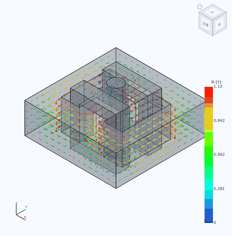
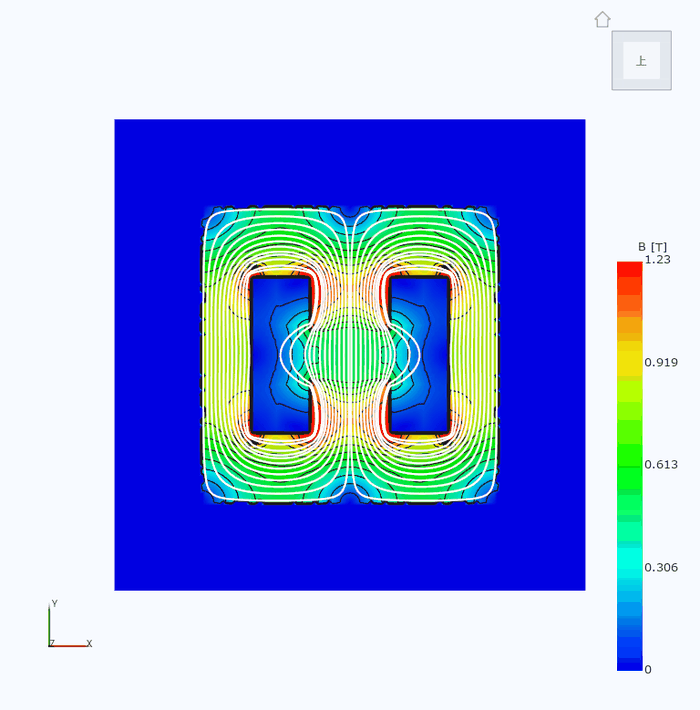
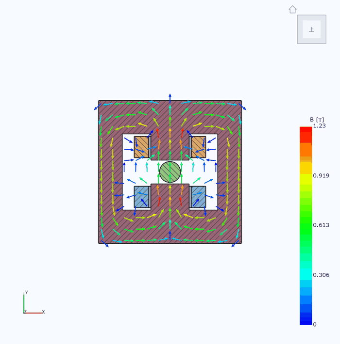
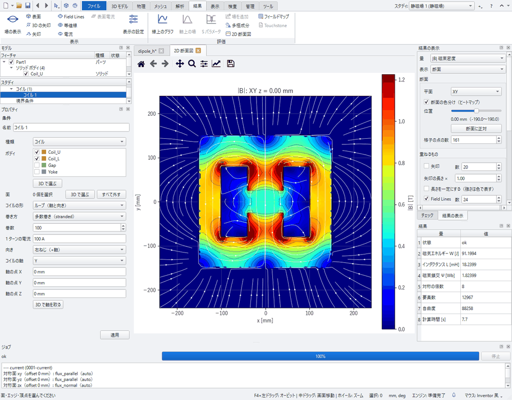

第 17 章
結果の見方
この章では、解析の結果を見る操作を説明します。表示する量と表示の仕方（断面・表面・3D の矢印）、重ねるもの（矢印・力線・等値線）、色、評価と書き出し、前の結果の開き方です。操作はどのスタディでも同じで、量の名前だけが違います。
17.1 表示する量と表示の仕方
解析が終わると、結果は 3D ビューに断面で表示されます。表示の仕方は、右の［結果の表示］のパネル（［結果］タブを開くと前に出ます。［表示の設定］でも開きます）でまとめて変えます。リボンのボタンは、よく使う切り替えの近道です。


| スタディ | 量 |
|---|---|
| 静磁場 | |B| 磁束密度、Bx・By・Bz、|H| 磁界の強さ、実効の比透磁率 μr、飽和度 M/Ms（飽和のある材料のときだけ） |
| 共振モード・ポート解析 | |E| 電界の強さ、Ex・Ey・Ez、|H|、Hx・Hy・Hz、|Js| 表面電流（壁） |
| 静電場 | φ 電位、|E| 電界の強さ、Ex・Ey・Ez、|D| 電束密度、比誘電率 εr |
| 電子銃 | 静電場の量と、ρ 空間電荷密度、|B| 外部磁場、|B| ビームの自己磁場。軌道を重ねて描く（第 24 章） |
成分（Bx など）は正負のある量で、0 を白にした青・白・赤で表示します。矢印と力線は、量のベクトル（B・E・H）で描きます。
| 表示 | 内容 |
|---|---|
| ［場の表示］（断面） | 座標面（XY・YZ・ZX）の断面の色分け。［位置］のスライダで断面を動かせます。［断面に正対］で断面を正面から見ます。形状は断面でカメラの側を取り去ります。共振モード・ポート解析では、空洞の中だけを描きます |
| ［表面］ | ボディ（自動の空気を除く）の表面を量で色分けします。鉄の飽和や、磁極の端・空洞の鼻の場の集中を見るのに向きます |
| ［3D の矢印］ | 形状のまわりの格子の点のベクトルの矢印（量で色分け）。形状は半透明になります |






17.2 重ねるものと色
| 設定 | 内容 |
|---|---|
| ［矢印］ | 断面の上のベクトルの矢印。［数］（長い辺の本数）と長さの倍率を変えられます。［長さを一定にする（強さは色で表す）］にすると、矢印の長さはすべて同じになり、強さは色だけで表します（場の弱い所でも向きがよく見えます） |
| ［Field Lines］ | 断面の上の力線（白。静磁場は磁力線、静電場は電気力線、共振モードとポート解析は量のベクトルの力線）。断面を横切る束が等しくなるように始点を並べます。対称面・中央の面では本当の力線、それ以外の面ではベクトルの面内成分をたどった線です |
| ［等値線］ | 表示している量の等値線（黒）。本数を変えられます |
| ［断面の色分け（ヒートマップ）］を外す | 色分けを描かず、矢印と等値線を量で色分けします（凡例も付きます）。何も重ねていないときに外すと、矢印が自動で出ます |


色の範囲: ［範囲を自動］では、大きさの量は 0〜99 パーセンタイル（角の特異点で全体が暗くならないように）、成分は ±99 パーセンタイル、電位と比透磁率・比誘電率は最小〜最大です。自動を外すと最小・最大を入れられます。［対数］で対数の目盛りにします。
色表: 虹色・viridis・plasma・暖色・青・白・赤・灰色から選びます。
格子の点の数: 断面の格子の細かさ（長い辺の点の数）。細かいほど滑らかで、時間がかかります。


17.3 評価と書き出し
| コマンド | 内容 |
|---|---|
| ［2D 断面図］ | 今の断面を 2D の図（色分け・等値線・力線・カラーバー）にして中央のタブに出します。マウスを載せた点の座標と値を、図の下に表示します |
| ［線上のグラフ］ | 始点・終点 [mm] と点の数を入れると、その線に沿った成分と大きさのグラフを出します。タブの［CSV に保存］で値を書き出せます |
| ［フィールドマップ］ | 規則格子（各軸の最小・最大・間隔 [mm]）の場を CSV か HDF5 に書き出します。ビームの軌道計算などに使います |
スタディごとの評価（静磁場の多極成分・インダクタンス、共振モードの軸上の場・表面電流、ポート解析の S パラメータ・Touchstone、静電場の電荷・容量・表面の最大電界）は、それぞれの章にあります。


右の［結果］の表には、スタディの主な値（静磁場ならエネルギー・インダクタンス、共振モードならモードの値、ポート解析なら共振探索の値、静電場なら電荷・容量）と、要素数・自由度・計算時間が出ます。
17.4 前の解析の結果を見る
解析の結果は解析ごとに残り、文書を閉じて開き直しても見られます（第 16 章）。
スタディのブラウザの［結果］の下に、そのスタディの解析が新しい順に並びます（
0003 2026-11-01 14:23のように番号と終わった時刻）。表示中の結果は太字です。行をダブルクリックするか、右クリックの［この結果を表示］で、その結果を読み込んで表示します。［結果］の行の右クリックの［最新の結果を表示］でも開けます。［フォルダを開く］で、結果のファイルの場所を開きます。
開き直した文書で、結果がまだ無いまま［結果］タブを開くと、アクティブなスタディの最新の結果を自動で読み込みます。
結果は、解析したときの形状と設定のものです。後で形状や設定を変えても、古い結果はそのまま表示されます。